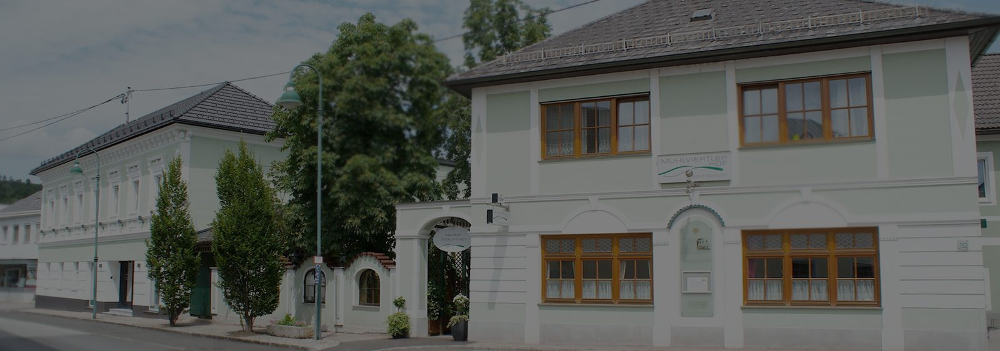
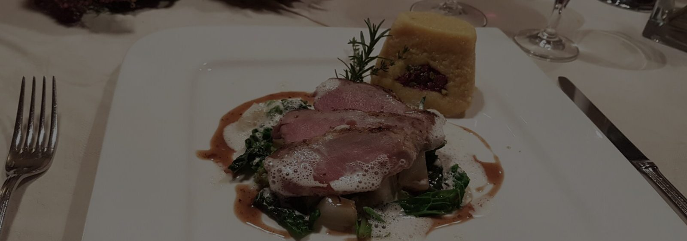
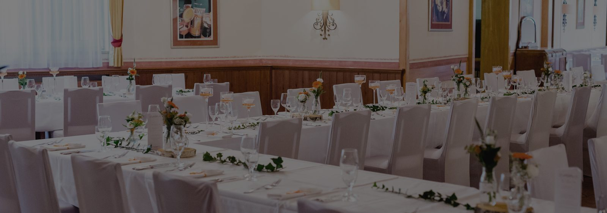
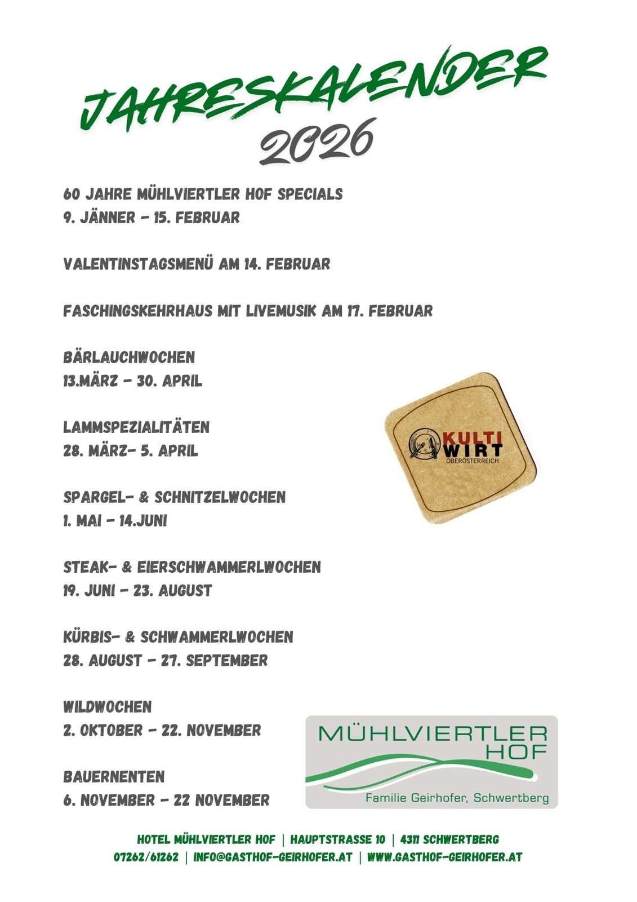

Hotel
Modern eingerichtete Komfortzimmer und eine Suite, alle mit Radio, Fernseher und kostenlosem WLAN. Ruhig gelegen – obwohl der Gasthof mitten im Zentrum steht.

Betriebsurlaub am 10. & 11. Oktober 2026 — an diesem Wochenende ist unser Restaurant geschlossen.
Willkommen
In unserem Hotel und Restaurant vereinen sich Mühlviertler Herzlichkeit und familiäre Gastfreundschaft. Wohlfühlen, entspannen, miteinander reden, Freund sein und Feste feiern – das ist die Philosophie unseres Hauses.
Traditionelle Wirtshauskultur, gehobene gutbürgerliche Küche und g’schmackige Getränke: „Wir z’Haus“ lautet unser Motto für ein paar nette Stunden im Gasthof.
Drei Häuser unter einem Dach
Modern eingerichtete Komfortzimmer und eine Suite, alle mit Radio, Fernseher und kostenlosem WLAN. Ruhig gelegen – obwohl der Gasthof mitten im Zentrum steht.

Ganzjährig saisonale regionale Speisen und internationale Schmankerl, dazu Mittagsmenüs, Spezialitätenwochen und das „Dinner for 2“ am Donnerstag.

Bis zu 250 Personen finden in unserem Festsaal Platz – mit Bühne, Tanzfläche und angrenzendem Garten. Für kleinere Runden gibt es abgeschlossene Räume.
Diese Woche
Von Mittwoch bis Freitag servieren wir zwei Mittagsmenüs. An Wochentagen gibt es außerdem ein zweigängiges Menü ab € 9,80.
Jeden Donnerstag
Ab 18:30 Uhr servieren wir ein viergängiges Menü mit Weinbegleitung für zwei Personen um € 80,–. Genießen Sie das Menü und den passenden Wein in der stimmungsvollen Atmosphäre unseres G’wölb.
Auch als Gutschein erhältlich – eine tolle Idee zum Verschenken.
Jahreskalender 2026
Für Abwechslung sorgen unsere Spezialitätenwochen – von den Bärlauchwochen im Frühjahr bis zu den Bauernenten im November.

Zusätzlich: Betriebsurlaub am 10. & 11. Oktober 2026 – an diesem Wochenende bleibt das Restaurant geschlossen.
Seit 1965
Josef Geirhofer erwarb den Gasthof von unserer „Leni Tante“ und führte ihn gemeinsam mit meiner Mutter bis 1991. Verschiedenste Um- und Zubauten ließen den Betrieb bis zur heutigen Größe wachsen.
Christian Geirhofer übernahm den Gasthof.
Beim ersten Umbau entstanden die „Mühlviertler Stuben“.
Nach dem Hochwasser wurde das „G’wölb“ errichtet und der Festsaal modernisiert.
Neubau der Küche und Modernisierung der bestehenden Fremdenzimmer.
Jubiläumsjahr: 50 Jahre Gasthof Geirhofer.
Eröffnung des Hotelzubaus im ehemaligen Kaufhaus Langthaler.
Tischreservierung, Zimmerbuchung, Hochzeit oder Seminar – schreiben Sie uns, oder rufen Sie einfach an: +43 7262 61262.